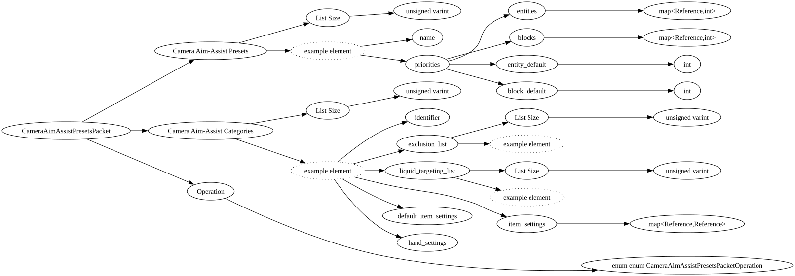

| Purpose: | Camera aim-assist registry presets/categories data sent from the server to clients. |
| Notes: | Sent by the server to clients for initializing and updating the client aim-assist registry. AddToExisting operations are sent by the server when new presets/categories are added to the registry through creator facing APIs. |

| Field Name | Field Type | Field Constraints | Field Notes |
|---|---|---|---|
| Camera Aim-Assist Presets | vector<CameraAimAssistCategoryDefinition> | ||
| Camera Aim-Assist Categories | vector<CameraAimAssistPresetDefinition> | ||
| Operation | enum enum CameraAimAssistPresetsPacketOperation |